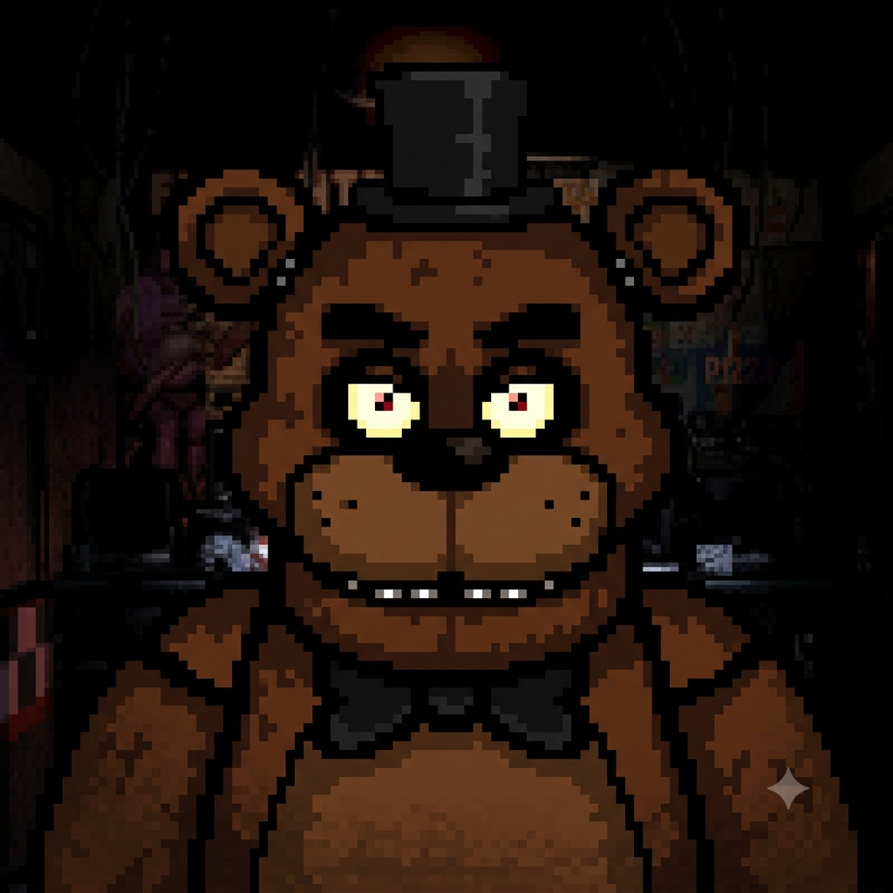

Meu primeiro post
Por: Thaylini Perini
Boas-vindas ao meu novo blog! Prepare-se para descobrir os segredos mais sombios e teorias do universo de Five Nights at Freddy's.
Teorias, segredos e mistérios do universo de Five Nights at Freddy's

Por: Thaylini Perini
Boas-vindas ao meu novo blog! Prepare-se para descobrir os segredos mais sombios e teorias do universo de Five Nights at Freddy's.